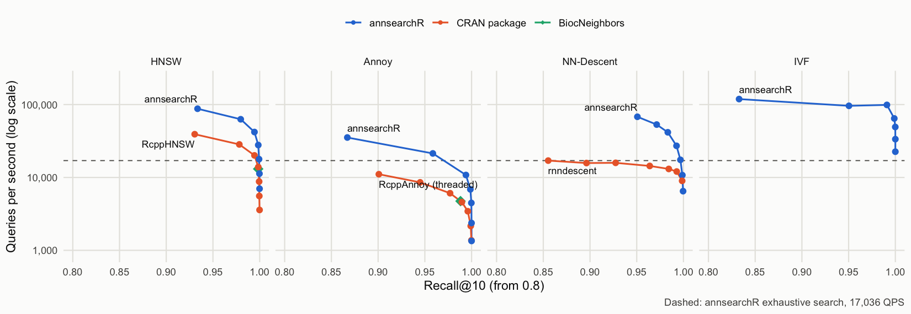
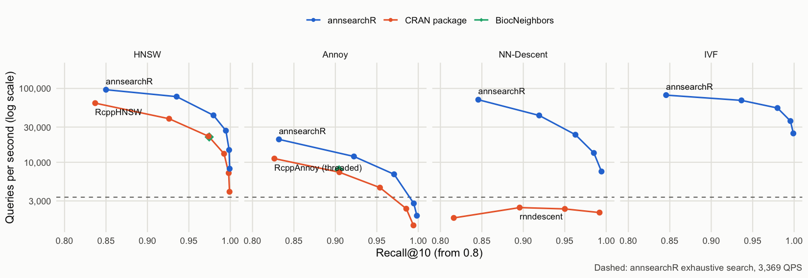
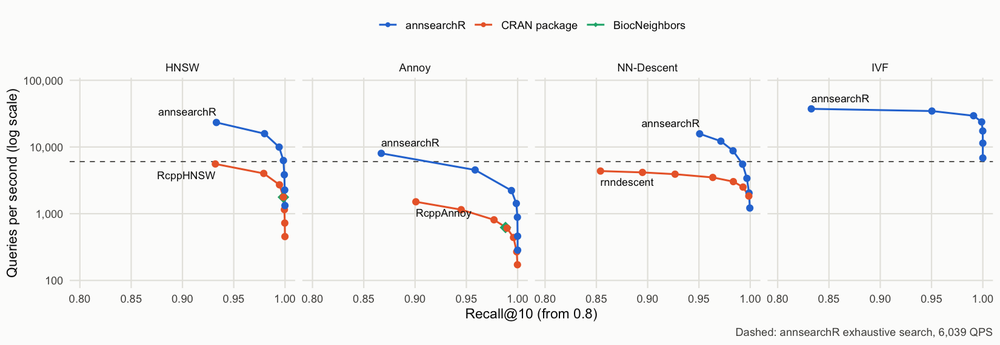
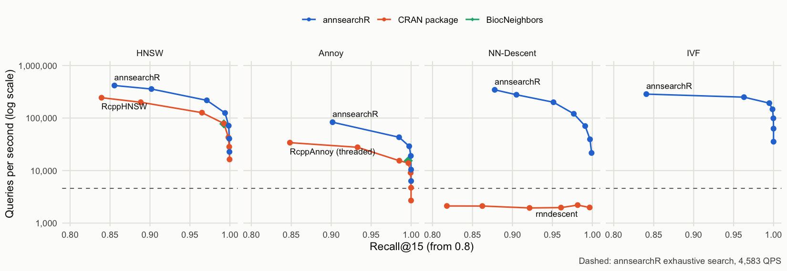

How does annsearchR stack up against the nearest neighbour packages R users actually reach for? We ran the ann-benchmarks protocol on two of its standard datasets, plus single cell PCA data, and compared every library at equal recall, not at equal settings. Two libraries with the same ef_search can land at different recall, so “faster at the same parameters” says little. Instead each library builds once, its search-time knob is swept, and we read off the best queries per second (QPS) it reaches at recall@10 of 0.90, 0.95 and 0.99.
These are numbers from one machine on one day with annsearchR 0.3.0 (ann-search-rs 0.13.1), frozen here rather than rebuilt with the package. Everything needed to rerun them is in inst/benchmarks/.
Setup
- Machine: Apple M1 Max, 10 cores (8 performance, 2 efficiency), macOS.
- Datasets: Fashion-MNIST, 60,000 x 784 (28 x 28 greyscale product photos), and SIFT-128, 1,000,000 x 128 (local image descriptors). Both use 10,000 held-out queries, k = 10, Euclidean distance and the ground truth that ships with the HDF5 files.
- Matched build parameters: HNSW at M = 16 and ef_construction = 200; Annoy at 50 trees; NN-Descent graphs of degree 30.
-
Swept at query time: HNSW and NN-Descent
ef_searchfrom 10 to 640; Annoysearch_kfrom 500 to 50,000; IVFnprobefrom 2 to 128; rnndescent’sepsilonfrom 0 to 0.3. - Libraries: annsearchR (Rust, via ann-search-rs), RcppHNSW (hnswlib), RcppAnnoy (Spotify’s Annoy), BiocNeighbors (KMKNN, plus hnswlib and Annoy), rnndescent (NN-Descent), FNN and RANN (exact kd-trees).
Each point is a single timed run over all 10,000 queries. Two repeat runs of the Fashion-MNIST sweep agreed within about 5% for most points, but one rnndescent point moved 1.5x between runs, so read small gaps as ties.
Results
Each panel is one algorithm family. Up and to the right is better. The dashed line is annsearchR’s exact brute-force search: an approximate index below it isn’t worth building on that data.
Fashion-MNIST, 10 threads

| Method | Library | Build (s) | QPS @ 0.90 | QPS @ 0.95 | QPS @ 0.99 |
|---|---|---|---|---|---|
| hnsw | annsearchR | 3.6 | 87,719 | 62,893 | 42,017 |
| hnsw | RcppHNSW | 8.6 | 39,216 | 28,409 | 20,080 |
| hnsw | BiocNeighbors | 67.6 | 13,089 | 13,089 | 13,089 |
| nndescent | annsearchR | 2.3 | 68,027 | 68,027 | 27,174 |
| nndescent | rnndescent | 16.3 | 15,873 | 14,388 | 12,063 |
| ivf | annsearchR | 0.4 | 99,010 | 99,010 | 99,010 |
| annoy | annsearchR | 1.7 | 21,368 | 21,368 | 10,811 |
| annoy | RcppAnnoy (threaded) | 16.6 | 11,074 | 6,083 | 3,440 |
| annoy | BiocNeighbors | 16.1 | 4,737 | 4,737 | n/a |
| exhaustive | annsearchR | 0.1 | 17,036 | 17,036 | 17,036 |
| kmknn | annsearchR | 0.4 | 25,000 | 25,000 | 25,000 |
| kmknn | BiocNeighbors | 116.0 | 759 | 759 | 759 |
| kd_tree | RANN | - | 30 | 30 | 30 |
| kd_tree | FNN | - | 30 | 30 | 30 |
SIFT-128, 10 threads

| Method | Library | Build (s) | QPS @ 0.90 | QPS @ 0.95 | QPS @ 0.99 |
|---|---|---|---|---|---|
| hnsw | annsearchR | 44.1 | 77,519 | 43,290 | 26,810 |
| hnsw | RcppHNSW | 84.9 | 38,911 | 22,523 | 13,055 |
| hnsw | BiocNeighbors | 572.6 | 22,026 | 22,026 | n/a |
| nndescent | annsearchR | 20.8 | 43,103 | 23,641 | 7,508 |
| nndescent | rnndescent | 188.8 | 2,338 | 2,338 | 2,087 |
| ivf | annsearchR | 1.1 | 68,966 | 54,348 | 36,232 |
| annoy | annsearchR | 7.2 | 12,005 | 6,887 | 2,778 |
| annoy | BiocNeighbors | 82.9 | 7,911 | n/a | n/a |
| annoy | RcppAnnoy (threaded) | 87.4 | 7,342 | 4,543 | 1,400 |
| exhaustive | annsearchR | 0.4 | 3,369 | 3,369 | 3,369 |
| kmknn | annsearchR | 1.4 | 7,231 | 7,231 | 7,231 |
| kmknn | BiocNeighbors | 858.9 | 255 | 255 | 255 |
| kd_tree | RANN | - | 6 | 6 | 6 |
| kd_tree | FNN | - | 6 | 6 | 6 |
Fashion-MNIST, 1 thread
The ann-benchmarks convention, and the fair fight for the single-threaded RcppAnnoy, FNN and RANN.

| Method | Library | Build (s) | QPS @ 0.90 | QPS @ 0.95 | QPS @ 0.99 |
|---|---|---|---|---|---|
| hnsw | annsearchR | 17.3 | 23,310 | 15,848 | 9,970 |
| hnsw | RcppHNSW | 67.6 | 5,568 | 4,016 | 2,711 |
| hnsw | BiocNeighbors | 67.3 | 1,769 | 1,769 | 1,769 |
| nndescent | annsearchR | 10.8 | 15,773 | 15,773 | 5,519 |
| nndescent | rnndescent | 76.7 | 3,912 | 3,495 | 2,507 |
| ivf | annsearchR | 0.5 | 34,602 | 34,602 | 29,412 |
| annoy | annsearchR | 5.7 | 4,527 | 4,527 | 2,224 |
| annoy | RcppAnnoy | 15.8 | 1,510 | 810 | 440 |
| annoy | BiocNeighbors | 15.2 | 622 | 622 | n/a |
| exhaustive | annsearchR | 0.2 | 6,039 | 6,039 | 6,039 |
| kmknn | annsearchR | 0.5 | 5,970 | 5,970 | 5,970 |
| kmknn | BiocNeighbors | 116.8 | 100 | 100 | 100 |
| kd_tree | FNN | - | 30 | 30 | 30 |
| kd_tree | RANN | - | 30 | 30 | 30 |
What the numbers say
-
HNSW: annsearchR runs about 2x the queries per second of RcppHNSW at every recall target on both datasets with 10 threads, and builds 1.9 to 2.4x faster. Recall at the same
ef_searchis within about 0.02 of RcppHNSW’s, so the graphs are of the same quality; the Rust search is just quicker. On one thread the gap widens to 3.7 to 4.2x: RcppHNSW gains more from extra threads than annsearchR does. - IVF: builds in 0.4 s on Fashion-MNIST and 1.1 s on SIFT and, with 10 threads, is the fastest index at every recall target on Fashion-MNIST and at 0.95 and 0.99 on SIFT. HNSW still wins at recall 0.90 on SIFT. No other R package ships IVF.
- NN-Descent: against rnndescent, 4.3x faster at recall 0.90 on Fashion-MNIST and 18x on SIFT, with builds 7 to 9x faster.
- Annoy: RcppAnnoy has no threaded query of its own. The “(threaded)” rows do what Seurat does: save the index to a temporary file and search it from C++ over a RcppThread pool (an idea from uwot), save cost included. annsearchR still does 1.5 to 3.5x the QPS and builds 10 to 12x faster.
- Exact search: annsearchR’s KMKNN is now its fastest exact search on 10 threads: 1.5x its own brute force on Fashion-MNIST and 2.1x on SIFT, and 28 to 33x BiocNeighbors’ KMKNN. On one thread the two are level. Both beat the single-threaded FNN and RANN kd-trees by a mile, about 570x for brute force on Fashion-MNIST.
-
Builds: BiocNeighbors builds its HNSW, Annoy and KMKNN indices on one thread whatever
num.threadssays, which is where its 9.5 and 14.3 minute SIFT builds come from.
Single cell: Tahoe PCA
Queries per second on held-out points is the ann-benchmarks question. Single cell asks a different one: how long until I have the kNN graph over all my cells? That graph is what FindNeighbors(), pp.neighbors() and every UMAP and Leiden run start from. So here’s that, on real data, followed by the usual sweep.
-
Data: one plate of Tahoe-100M, 2,857,393 cells, 32 principal components. Random subsets of 500k and 1M cells, plus 10,000 held-out cells for the query sweep. Built by
prep_tahoe.Rin the same HDF5 layout as the ann-benchmarks files. - Settings: k = 15, Euclidean distance, 10 threads, same machine and same build parameters as above.
Time to the full kNN graph
Each point is build plus self-query, from the raw matrix to the k = 15 graph over every cell, each cell counted as its own first neighbour. Every index builds once and its search knob gets swept. NN-Descent has no search step: the graph falls out of the descent, either read off the index ($extract_knn()) or from knn_graph_nndescent(), which never keeps an index around. Recall comes from 10,000 random cells against the exact graph. RcppAnnoy builds on one thread and gets queried the way Seurat does it.
Seconds to the full graph at each recall target:
| Method | Library | 500k @ 0.90 | 500k @ 0.95 | 500k @ 0.99 | 1M @ 0.90 | 1M @ 0.95 | 1M @ 0.99 |
|---|---|---|---|---|---|---|---|
| ivf | annsearchR | 1.2 | 1.2 | 1.5 | 2.9 | 2.9 | 3.8 |
nndescent, knn_graph_nndescent()
|
annsearchR | 2.1 | 2.1 | 2.1 | 4.9 | 4.9 | 4.9 |
nndescent, $extract_knn()
|
annsearchR | 2.4 | 2.4 | 2.4 | 6.2 | 6.2 | 6.2 |
| kmknn (exact) | annsearchR | 4.2 | 4.2 | 4.2 | 12.6 | 12.6 | 12.6 |
| annoy | annsearchR | 3.9 | 6.7 | 6.7 | 8.7 | 15.6 | 23.5 |
| hnsw | annsearchR | 7.8 | 7.8 | 8.7 | 18.6 | 19.1 | 24.2 |
| annoy | RcppAnnoy (threaded) | 29.4 | 32.6 | 39.7 | 68.1 | 85.0 | 108.7 |
And what Seurat hands you by default (search.k = -1, so 750 here) against the obvious alternatives:
| 500k | 1M | |
|---|---|---|
| RcppAnnoy, Seurat default | 29.4 s, recall 0.906 | 61.1 s, recall 0.873 |
annsearchR IVF, nprobe = 4
|
1.2 s, recall 0.979 | 2.9 s, recall 0.967 |
annsearchR knn_graph_nndescent()
|
2.1 s, recall 0.996 | 4.9 s, recall 0.995 |
| annsearchR KMKNN, exact | 4.2 s, recall 1.000 | 12.6 s, recall 1.000 |
- Exact beats Seurat’s approximate. KMKNN gets the exact graph over 1M cells in 12.6 s, 5x faster than RcppAnnoy’s approximate one at recall 0.87. 45 s of RcppAnnoy’s 61 s is the single-threaded build.
- NN-Descent is the no-brainer. 0.995 recall in 4.9 s at 1M, nothing to tune. The graph is the build, so skipping the index saves another 20%.
- IVF is the fastest at every recall target, 21x Seurat’s default at 1M with better recall.
- HNSW is the wrong tool for this job. Its query is nearly free, but the 16.5 s build dominates when you only want one graph.
Queries per second, 1M cells
The ann-benchmarks protocol on the 1M subset, with 10,000 held-out cells as queries and recall@15.

| Method | Library | Build (s) | QPS @ 0.90 | QPS @ 0.95 | QPS @ 0.99 |
|---|---|---|---|---|---|
| hnsw | annsearchR | 16.1 | 357,143 | 217,391 | 125,000 |
| hnsw | RcppHNSW | 20.7 | 126,582 | 126,582 | 78,740 |
| hnsw | BiocNeighbors | 152.1 | 77,519 | 77,519 | 77,519 |
| nndescent | annsearchR | 10.1 | 277,778 | 200,000 | 70,423 |
| nndescent | rnndescent | 151.0 | 2,202 | 2,202 | 1,983 |
| ivf | annsearchR | 0.4 | 250,000 | 250,000 | 192,308 |
| annoy | annsearchR | 2.2 | 83,333 | 43,103 | 29,070 |
| annoy | RcppAnnoy (threaded) | 39.1 | 27,778 | 15,408 | 13,889 |
| annoy | BiocNeighbors | 35.4 | 15,408 | 15,408 | 15,408 |
| exhaustive | annsearchR | 0.1 | 4,583 | 4,583 | 4,583 |
| kmknn | annsearchR | 0.4 | 56,497 | 56,497 | 56,497 |
| kmknn | BiocNeighbors | 125.2 | 15,898 | 15,898 | 15,898 |
| kd_tree | RANN | - | 146 | 146 | 146 |
| kd_tree | FNN | - | 138 | 138 | 138 |
-
Annoy needs a bigger budget than Spotify’s. At the same
search_kannsearchR’s Annoy lands lower: 0.77 against 0.85 recall at Seurat’s 750 on 1M. Our leaves hold 64 items, Spotify’sdim + 2, so a small budget touches fewer trees. Matching Spotify’s leaves and queue narrows the gap but costs more speed than it buys back. At equal recall annsearchR is still 2.1 to 3x faster, and it builds 17x faster. - The rest follows the ann-benchmarks picture: HNSW 1.6 to 2.8x RcppHNSW, NN-Descent 35 to 126x rnndescent, BiocNeighbors’ single-threaded builds take 2 to 2.5 minutes at 1M.
Caveats
- Brute force isn’t single-core even on “1 thread”. On macOS the exhaustive index runs large batches through Apple Accelerate. At “1 thread” it worked out to roughly 574 GFLOP/s on Fashion-MNIST, far more than one core can do, so read its 1-thread numbers as Accelerate’s. The approximate indices don’t use that path.
-
BiocNeighbors HNSW and Annoy are single points. Its prebuilt index bakes the search parameter in, so sweeping it would mean one rebuild per point. We matched it to the middle of the sweep instead (
ef.search = 80,search_k = 5,000). -
rnndescent spends its time per query, not in the search. Its QPS stays flat across the whole
epsilonsweep while recall climbs from 0.59 to 0.99 on SIFT. A fixed cost per call is about 0.25 s, about 5% of a 10,000-query call; the rest is roughly 0.44 ms per query regardless ofepsilon. Where exactly that goes is inside its C++ code and wasn’t profiled further. - SIFT ground truth: annsearchR’s exhaustive search reaches recall 0.9993 against the file’s own ground truth, not 1.0000. Ties between integer-valued descriptors are the likely reason; nothing in the tables depends on it.
Rerunning
# downloads the HDF5 files once into tools::R_user_dir("annsearchR", "cache")
Rscript inst/benchmarks/bench_ann_benchmarks.R fashion-mnist-784-euclidean 10
Rscript inst/benchmarks/bench_ann_benchmarks.R sift-128-euclidean 10
# Tahoe: build the HDF5 files from a cells x 32 PCA matrix, then sweep and
# time the full kNN graph
Rscript inst/benchmarks/prep_tahoe.R pca_data.qs2 <cache dir>
Rscript inst/benchmarks/bench_ann_benchmarks.R tahoe-1m-32-euclidean 10
Rscript inst/benchmarks/bench_knn_graph.R tahoe-1m-32-euclidean 10
# plots from inst/benchmarks/results/*_sweep.csv
Rscript inst/benchmarks/plot_results.ROn SIFT the index builds alone add up to about 32 minutes on the machine above, most of it in the single-threaded BiocNeighbors and RcppAnnoy builds.